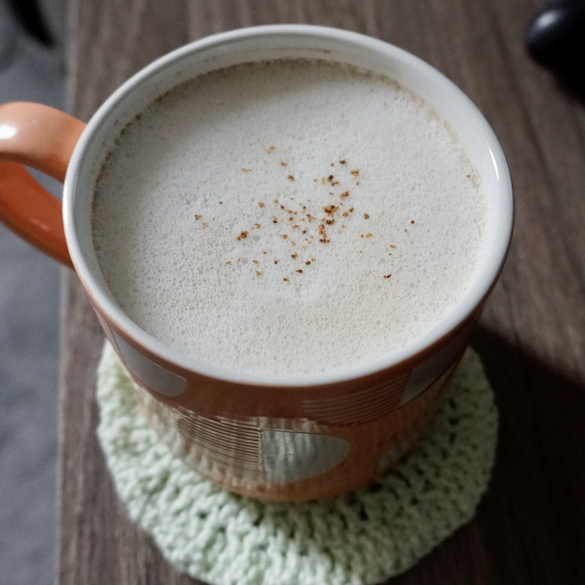
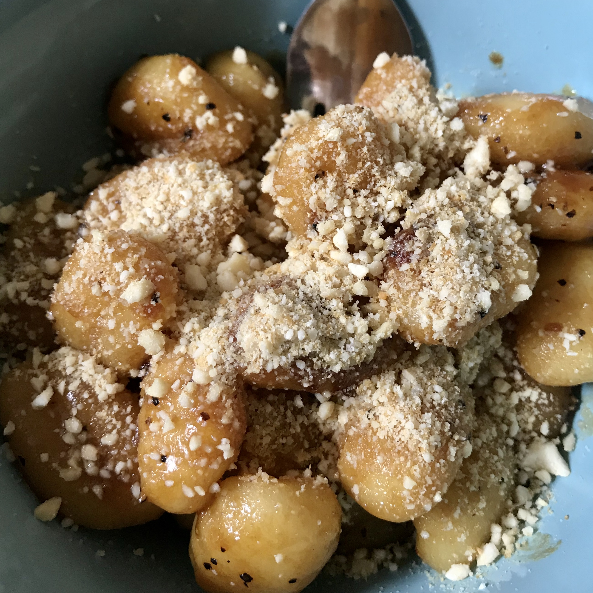

HOME ABOUT BLOG PORTFOLIO CONTACT


It was my boyfriend's birthday recently and, instead of baking a regular birthday cake, I decided that it would be a touch more special to try making a dairy free baked cheesecake instead!
It's absolutely heavenly; rich, creamy, and genuinely one of the best cheesecakes I've ever eaten in my life, despite having no real cheese in it! Unfortunately for those of you with nut allergies, this is not the recipe for you. In future I will try to make another iteration of the recipe that does not include cashews.

It has been a decidedly cool and rainy June so far and, thanks to the many grey days that require a little bit of extra comfort, this rich, velvety oat milk cappuccino has become a breakfast staple.
All you'll need to froth the oat milk is a cafetiere. While I used to manage just fine using one cafetiere for both the coffee and milk- through performing a cumbersome dance of plunge, pour, wash, repeat, all while hoping my coffee doesn't get too cold- I would highly recommend investing in a second cafetiere if it becomes your preferred method for frothing milk.

I grew up idolising Nigella, always in awe of how confidently she paired bold flavours together. This recipe, adapted from her marmite spaghetti, is no exception.
Gnocchi is cheap and filling, making it a perfect base for inventive sauces such as this one! I chose to top this dish with a vegan parmesan alternative, which adds a nutty, creamy element.